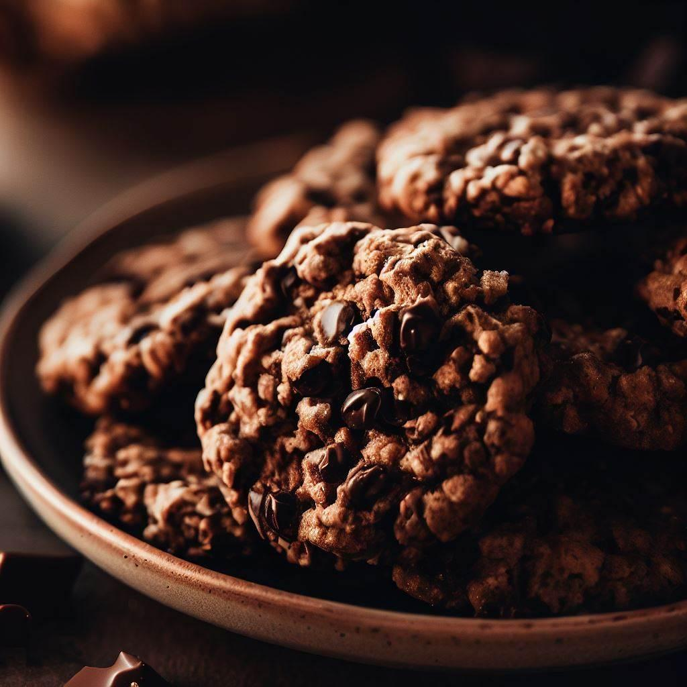
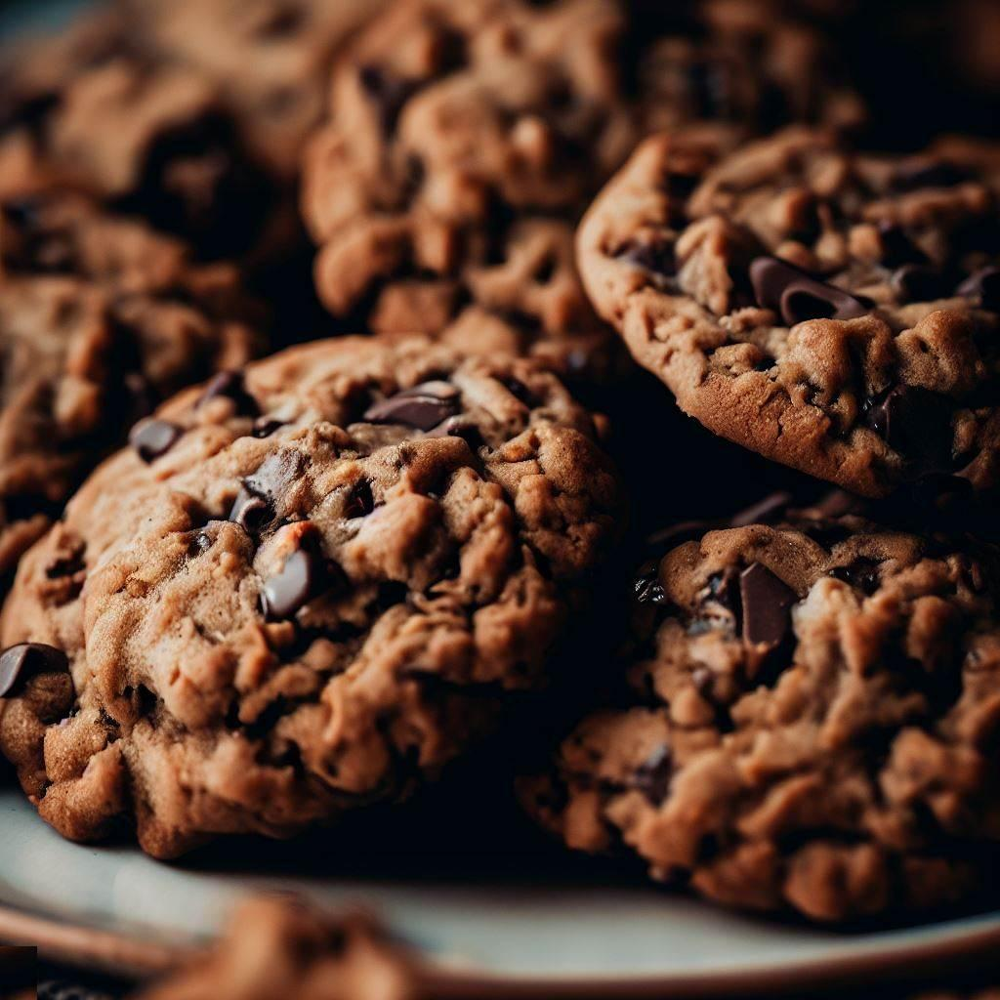
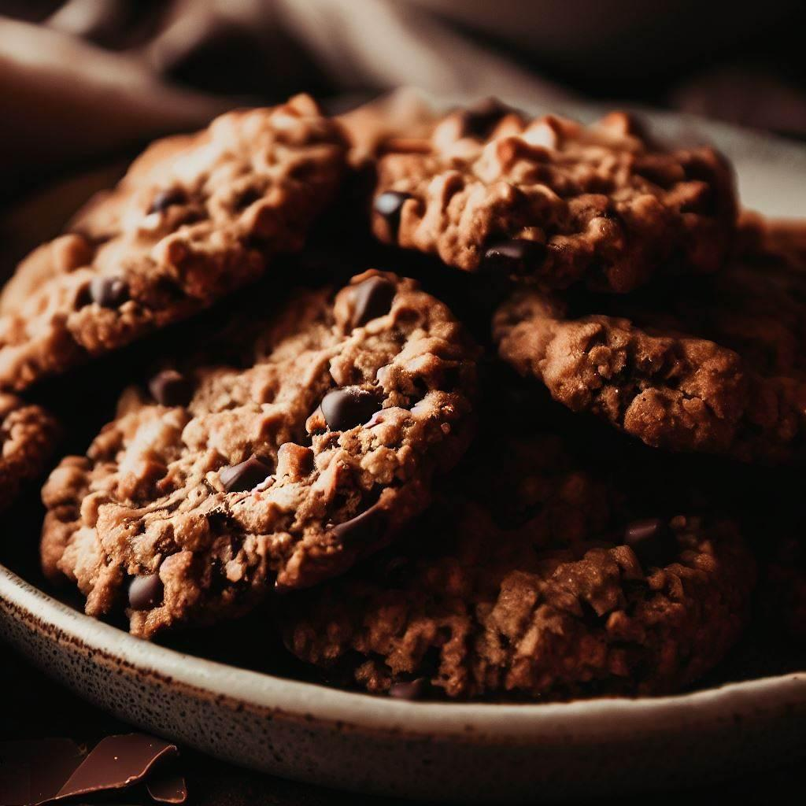
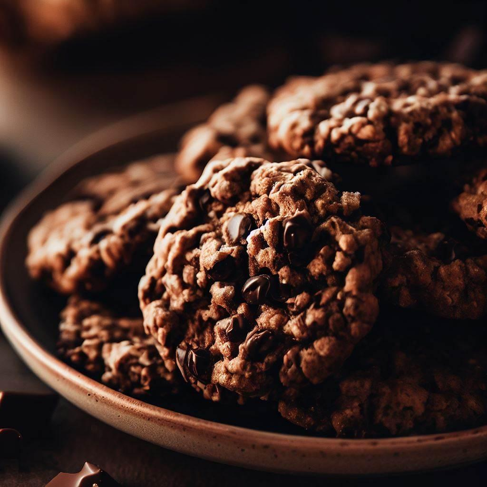
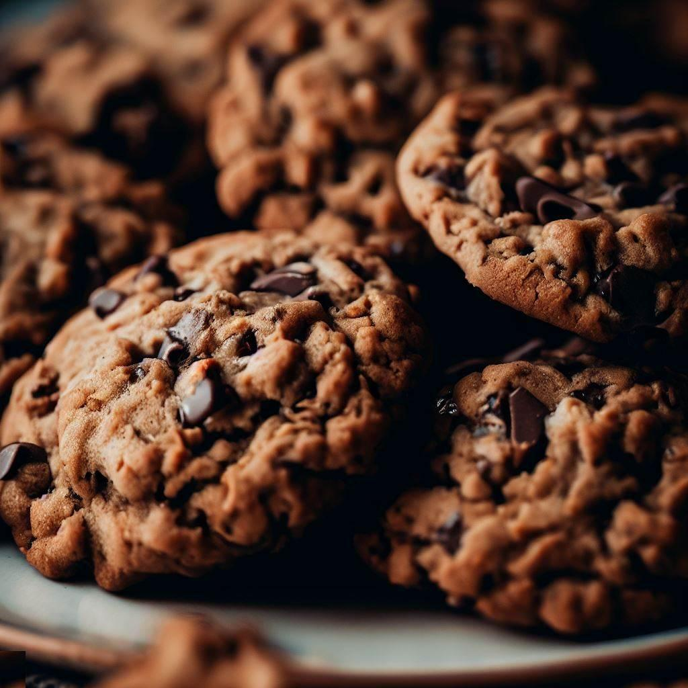
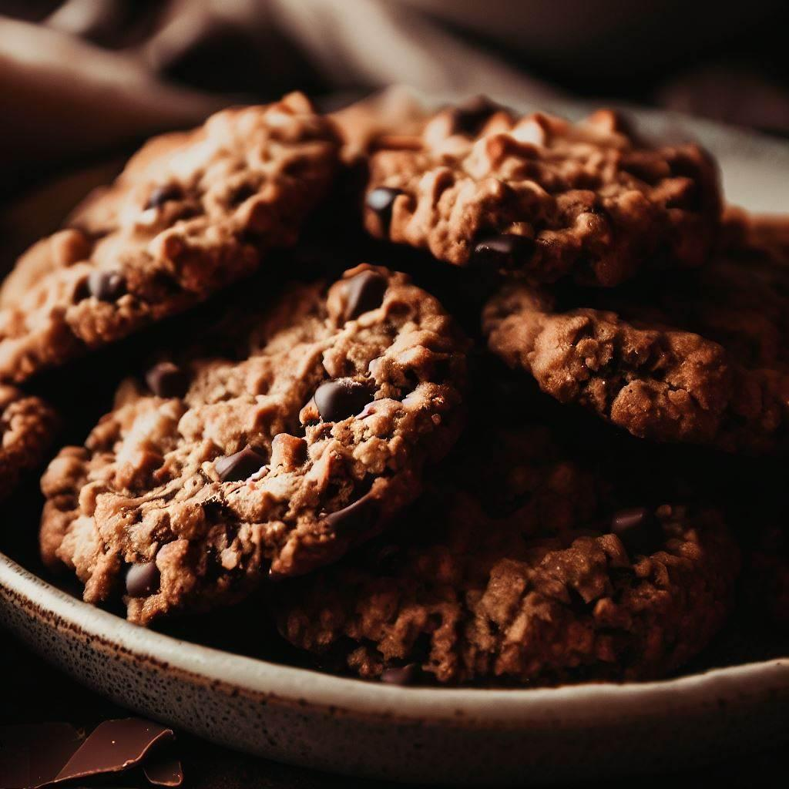

Chocolate Chips Cookies
 





Description
Indulge in our freshly baked chocolate chip cookies, loaded with gooey chocolate chips and baked to perfection. Our classic recipe, inspired by Ruth Graves Wakefield's original creation in 1938, combines the perfect balance of flour, butter, brown and white sugar, semi-sweet chocolate chips, eggs, and vanilla. Satisfy your sweet tooth with this timeless treat!
Ingredients
- 1 cup butter
- 1 cup brown sugar
- 1 cup white sugar
- 2 teaspoons vanilla extract
- 3 cups oats
- 1 ½ cups all-purpose flour
- 1 cup chocolate chips, or more to taste
- ½ cup cocoa powder
- 1 teaspoon baking soda
- 1 teaspoon salt
Steps
- Preheat oven to 350°.
- Beat butter, brown sugar, and white sugar together in a bowl using an electric mixer until smooth and creamy. Beat vanilla extract into butter mixture until incorporated.
- Whisk oats, flour, chocolate chips, cocoa powder, baking soda, and salt together in a bowl; slowly stir into butter mixture until dough is just mixed. Scoop dough using a small scooper onto baking sheet.
- Bake in the preheated oven until edges of cookies are lightly browned, about 15 minutes.